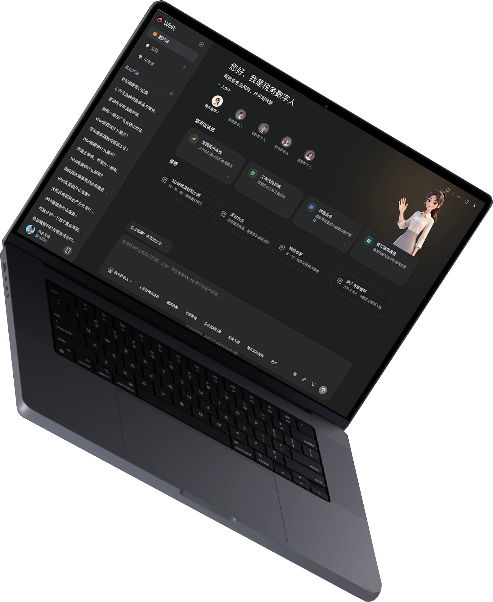
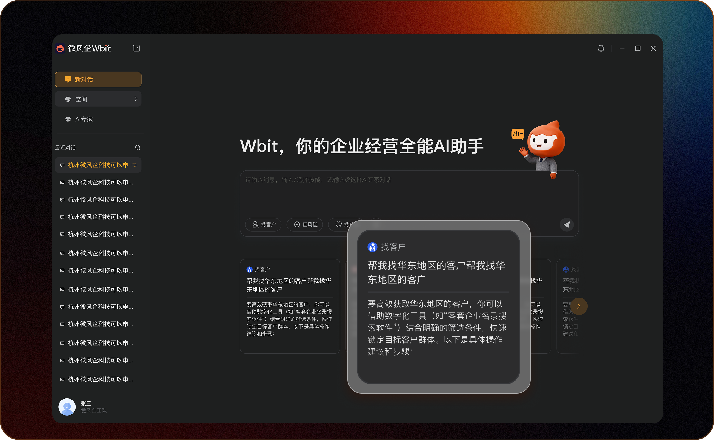
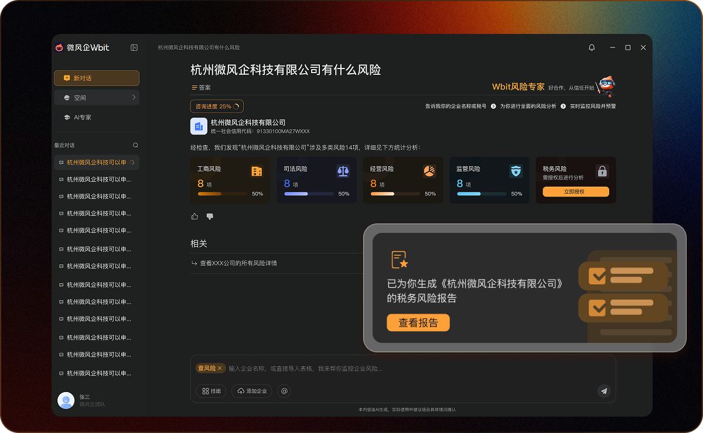
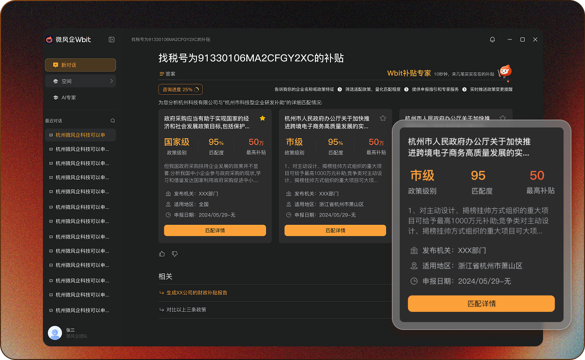
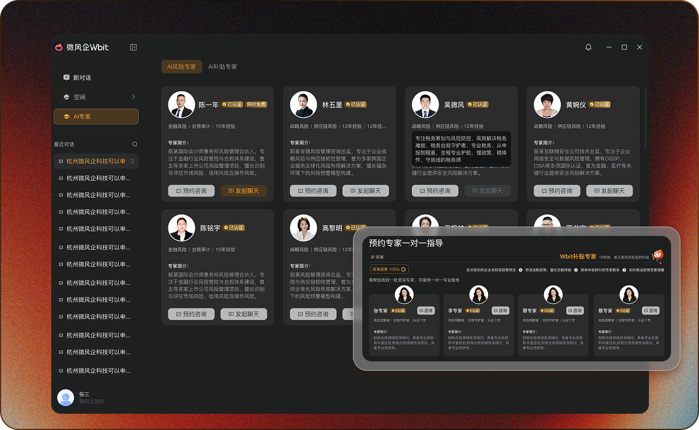

用 Agent 完成问题初筛、材料补齐和报告生成，让专家处理更复杂的问题。
Wbit / Enterprise AI Agent
UX Case Study / PC + Mobile
Case Thesis
重构可执行的
AI 财税工作流。
Wbit 面向小微企业的税务、政策、融资与经营风险场景。这个案例的核心不是重画一个漂亮界面， 而是让不会写 Prompt 的用户，也能通过 Agent 完成专业判断、结果复核和后续服务承接。
Role
UX / UI Designer
Scope
Agent interaction, PC workbench, mobile touchpoints

把自然问题翻译成财税任务，让用户清楚看见依据、风险和下一步。
PC 承载分析和配置，移动端负责提醒、确认、补材料和服务进度。
Background
01
项目背景
财税服务正在从“事后记账”，转向“实时风险识别和经营决策辅助”。
金税四期、全电发票和企业数据治理，让企业经营中的风险、政策和融资线索越来越依赖实时数据判断。 小微企业知道自己可能有问题，但常常不知道该怎么问、该信什么、下一步该怎么处理。
因此 Wbit 的机会不是做一个更会聊天的 AI，而是把 AI、企业数据、专家服务和持续监测整合成一个经营服务入口。
财税监管从抽样和人工申报，转向发票、流水、申报、经营数据的实时交叉校验。 企业问题不再只发生在报税节点，而是随时可能被数据识别出来。
所以设计要从“用户来查”转向“系统主动发现风险”。小微企业老板和财务人员不一定懂政策口径，也不一定会写 Prompt。 同一个问题，有人能描述成专业税务场景，有人只会说“我是不是有风险”。
所以设计要用角色、任务模板和追问机制拉平 AI 使用能力。财税判断不能停在一句回答。用户真正需要的是风险依据、材料清单、处理建议， 以及必要时能转给专家继续处理。
所以设计要把 AI 回答变成报告、任务和专家服务的起点。
02
用户分析
用户差异不是职位差异，而是专业判断能力和 AI 使用能力的差异。
不知道怎么问
AI 说的我能信吗？
风险提醒之后谁来处理？
我只想知道下一步做什么
财税结果要有人兜底
AI 使用能力分层
Level 01 / 不会问
需要任务入口和示例问题
Level 02 / 问不准
需要系统主动补齐上下文
Level 03 / 会使用
需要自由输入和高级控制
要快速判断风险和机会，不想被财税术语淹没。
设计回应：给经营摘要、风险等级和下一步建议。关注依据、异常项、材料缺口和复核责任。
设计回应：展示来源、指标拆解和人工复核入口。希望把咨询转成报告、任务和可交付服务。
设计回应：保留企业档案、历史上下文和服务进度。
03
竞品分析
我不把竞品只看成界面风格，而是拆它们在“专业能力、AI 交互、服务承接”上的缺口。
竞品 / 类型
主要优势
体验缺口
Wbit 的改变
功能覆盖完整，适合专业财务人员。
入口复杂，普通老板很难把经营问题转成具体操作。
用数字人角色和任务模板，把功能入口翻译成业务场景。
有财税知识和专家服务资源。
响应链路偏人工，实时风险触达和持续监测不够强。
让 AI 先完成初筛、解释和报告，再把复杂问题转给专家。
自然语言交互门槛低，回答速度快。
缺少企业档案、依据来源、风险边界和人工兜底。
把 Prompt 产品化，输出结论、依据、风险、动作和复核点。
Competitive conclusion
竞品分别解决了“工具、知识、对话”，但没有把三者合成一条可执行的财税服务流程。
所以 Wbit 的设计方向不是再做一个万能聊天入口，而是把传统财税 SaaS 的数据能力、财税服务平台的专家能力、 通用 AI 的自然语言能力合并起来：前台用数字人和任务模板降低提问门槛，中台用企业上下文和 Prompt 约束保证输出可信， 后台用报告、材料、专家和进度完成服务承接。
04
解决痛点
从用户和竞品缺口中，我把核心问题收敛成四个体验断点。
用户有经营问题，但不知道如何转换成专业提问。
解决方式：把空白输入框前置为“数字人角色 + 场景任务卡”，让用户先选目标，再进入对话。财税结果有风险，用户需要知道 AI 为什么这么判断。
解决方式：结果页固定输出风险等级、判断依据、引用数据、缺失材料和人工复核点。普通 AI 回答结束后，用户仍然不知道下一步谁来处理。
解决方式：把回答转成报告、待办、材料清单和专家承接入口，让咨询变成服务流程。PC 适合深度分析，移动端适合提醒确认，但两端状态容易断开。
解决方式：PC 做报告和任务编排，移动端做风险提醒、材料补充、进度确认和老板摘要。
05
交互详解
交互不是把聊天框放大，而是把用户意图一步步转成可执行任务。
Scenario / Tax Agent
从“我是不是有税务风险？”到一份可复核的税务体检报告。
我把交互起点放在税务数字人，而不是一个空白聊天框。因为财税场景里，用户真正缺的不是表达欲， 而是把模糊担心转成可执行任务的能力。
系统切换到税务语境，展示税负异常、票税风险、合规体检等高频任务。
用户不用自己写完整 Prompt，只需要选择“税务体检”或“发票风险排查”。
系统自动带入行业、营收、开票、申报、历史异常，并提示缺失材料。
把用户原话转换成角色、数据范围、判断标准、输出格式和风险边界。
不是只给一句结论，而是输出风险等级、依据、异常项、建议动作。
高风险或材料不足时，进入材料补齐、专家复核和后续处理进度。
税务数字人 / 角色切换
税务体检 / 发票风险 / 申报建议
用户原话 + Prompt 引导
风险报告 / 依据 / 下一步动作
税务问题天然有专业边界，不能让用户完全自由发散。先进入税务数字人，可以让系统锁定判断口径、数据范围和输出格式。
对不会写 Prompt 的用户来说，任务模板就是提问脚手架。它先把“担心有问题”收敛成税负异常、发票风险、申报建议等可执行任务。
模板解决“不会开始”，对话解决“继续追问”。报告生成后，用户可以围绕异常项追问、上传材料或让专家介入。
Agent System
5 大数字人不是五个菜单，而是五种业务判断视角。
税务数字人负责发现风险，财税数字人负责解释经营数据，老板数字人负责压缩成决策摘要，信贷数字人负责匹配融资机会，销售数字人负责客户线索和商机跟进。
税负异常、票税风险、合规体检、申报建议。
报表解读、经营指标、现金流和成本分析。
把专业结论翻译成经营摘要和决策建议。
融资资质、企业画像、政策和金融产品匹配。
客户线索、销售话术、商机跟进、获客建议。
用户原话
“最近公司税负是不是有点异常？”
系统翻译
税务角色 + 企业档案 + 风险体检 + 输出约束
结果对象
风险等级 / 依据来源 / 缺失材料 / 下一步动作
Prompt 产品化机制
意图识别
角色 Prompt
企业上下文变量
工具 / 知识调用
输出格式约束
风险边界与复核点
06
视觉推导
视觉规范不是重新做一套风格，而是从 Wbit 当前深色工作台里提取可延展的系统规则。
Color System
深灰工作台 + 暖橙行动色
背景不是纯黑，而是分成页面底色、侧栏底色、卡片底色和输入框底色。暖橙只用于“立即咨询、发送、确认处理”等明确行动， 金色用于认证和状态，避免把风险、品牌和按钮都混成一种颜色。
#1F2022页面背景
#282A2D侧栏 / 输入区
#303032内容卡片
#FF9F34主行动色
#B58638认证状态
#F3F3F0主文字
预约专家一对一指导
页面主背景保持最深，侧栏略亮，卡片再亮一层，输入框用边框和内阴影强调可输入状态。
咨询、发送、确认处理可以使用橙色；标签、装饰和大面积背景不使用橙色，保证按钮永远最清楚。
标题、说明、状态、操作要分层。专家卡片里头像和姓名是识别，认证是信任，按钮是动作，三者不能抢同一层级。
PC 工作台不需要夸张大字。标题负责模块定位，正文负责解释，弱文字控制在 60% 透明度以内，避免灰到不可读。
左侧承载导航和历史上下文，中间区域留出呼吸感；专家卡片和结果卡片使用统一间距，保证横向扫描效率。
Wbit 的组件应该偏工具型和可信感。少用漂浮卡片，多用稳定容器、清晰边界和可预期的操作位置。
07
页面展示
从开始提问，到风险判断，再到服务闭环。




08
业务验证
设计是否成立，最终要看它有没有进入真实业务场景，并帮助用户更快完成判断和行动。
Pilot outcome / 政务园区
产业治理效率提升 60%
在政务园区场景里，Wbit 通过 AI 产业链图谱与智能驾驶舱，把企业画像、风险状态、招商线索和政策服务整合到同一套工作流中。 设计重点从“展示数据”转向“辅助园区做判断”：哪些企业值得重点服务、哪些企业存在停业风险、哪些政策可以精准触达。
客户转化率提升。帮助银行更快理解企业经营状态，从“不敢贷”转向更精准的授信判断。
营收增长提升。通过税务体检报告和后续服务建议，把代账服务升级为顾问式服务。
产业治理效率提升。通过产业链图谱、企业健康度和政策匹配，提升招商、治理和服务触达效率。
金融行业
把企业画像和风险判断接到授信筛选，帮助业务从“不敢贷”进入“精准贷”。
税务机构
把税务体检报告接到顾问服务，让 AI 结论继续转成客户可购买的解决方案。
政务园区
把产业链图谱接到招商、治理和政策触达，提升园区对企业状态的主动管理能力。
09
最后总结
这个项目让我更明确：AI Agent 的体验价值，不在于让用户多和 AI 聊几轮，而在于把不确定的问题变成可判断、可复核、可继续处理的工作流。
My point of view
好的 AI 产品设计，不是把复杂能力藏进一个聊天框，而是替用户组织问题、控制风险、交付下一步。
对财税这类高专业场景，完全自由输入并不一定代表低门槛。更好的方式是先给角色、任务和示例，让用户进入正确语境。
AI 的回答越专业，越需要展示判断来源、数据范围、缺失材料和风险边界。可信任不是语气像专家，而是结果能被复核。
用户最终不是为了看 AI 多聪明，而是为了知道下一步怎么做。报告、待办、专家承接和移动端提醒，才是智能真正落地的地方。
Methodology
行业变化
用户能力差异
竞品缺口
任务流重构
Prompt 产品化
服务闭环